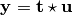
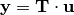
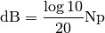

Signal¶
This module constains a function to perform a convolution of signal with a Linear Time-Variant system.
- acoustics.signal.butter_bandpass_filter(data, lowcut, highcut, fs, order=3)[source]¶
Butterworth bandpass filter.
Parameters: - data – data
- lowcut – Lower cut-off frequency
- highcut – Upper cut-off frequency
- fs – Sample frequency
- order – Order
- acoustics.signal.convolve(signal, ltv, mode='full')[source]¶
Perform convolution of signal with linear time-variant system ltv.
Parameters: - signal – Vector representing input signal
 .
. - ltv – 2D array where each column represents an impulse response
- mode – ‘full’, ‘valid’, or ‘same’. See np.convolve() for an explanation of the options.
The convolution of two sequences is given by

This can be written as a matrix-vector multiplication

where
 is a Toeplitz matrix in which each column represents an impulse response.
In the case of a linear time-invariant (LTI) system, each column represents a time-shifted copy of the first column.
In the time-variant case (LTV), every column can contain a unique impulse response, both in values as in size.
is a Toeplitz matrix in which each column represents an impulse response.
In the case of a linear time-invariant (LTI) system, each column represents a time-shifted copy of the first column.
In the time-variant case (LTV), every column can contain a unique impulse response, both in values as in size.This function assumes all impulse responses are of the same size. The input matrix ltv thus represents the non-shifted version of the Toeplitz matrix.
- signal – Vector representing input signal
- acoustics.signal.decibel_to_neper(decibel)[source]¶
Convert decibel to neper.
Parameters: decibel – Value in decibel (dB). The conversion is done according to

- acoustics.signal.ir2fr(ir, fs, N=None)[source]¶
Convert impulse response into frequency response. Returns single-sided RMS spectrum.
Parameters: - ir – Impulser response
- fs – Sample frequency
- N – Blocks
Calculates the positive frequencies using np.fft.rfft(). Corrections are then applied to obtain the single-sided spectrum.
Note
Single-sided spectrum. Therefore, the amount of bins returned is either N/2 or N/2+1.